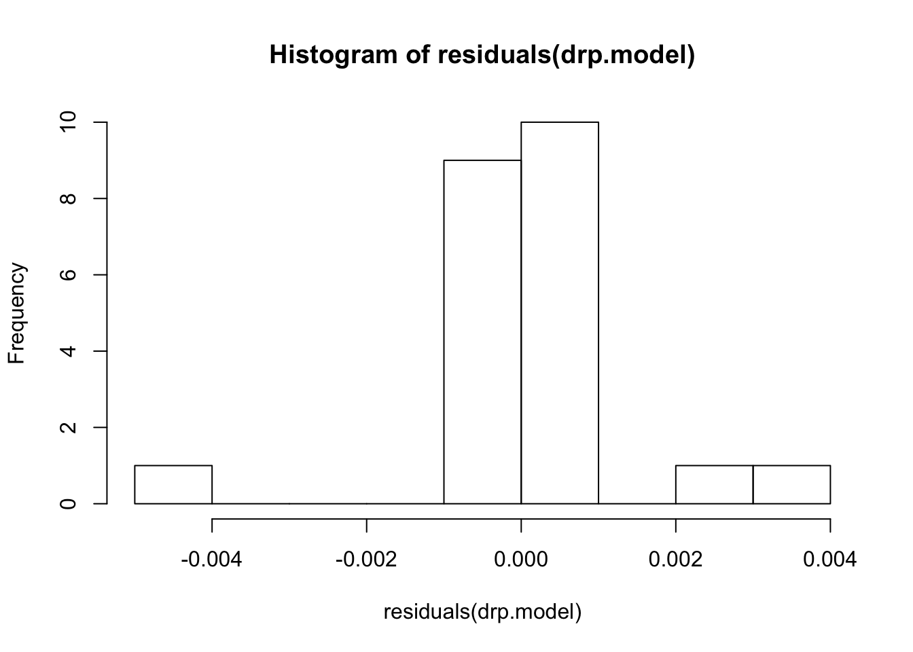
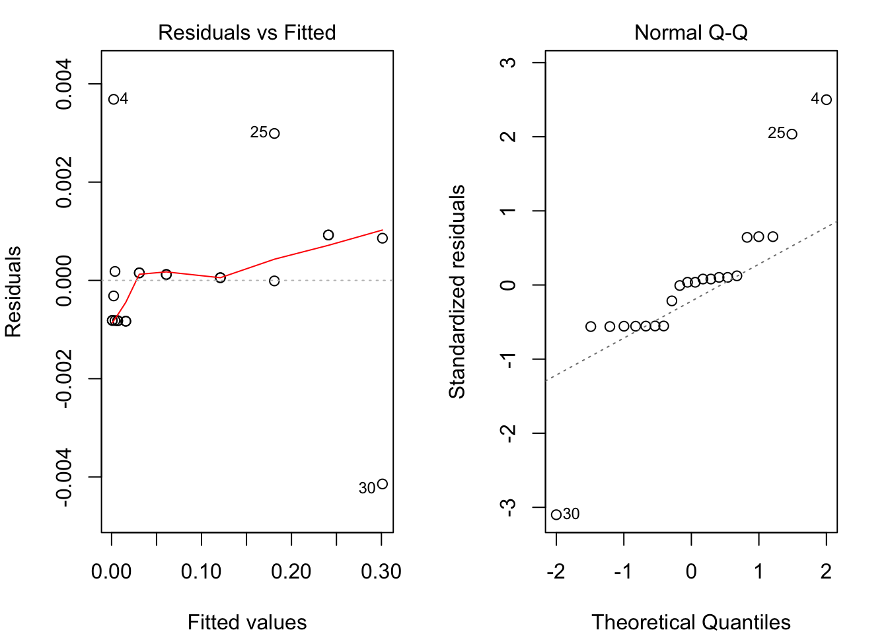
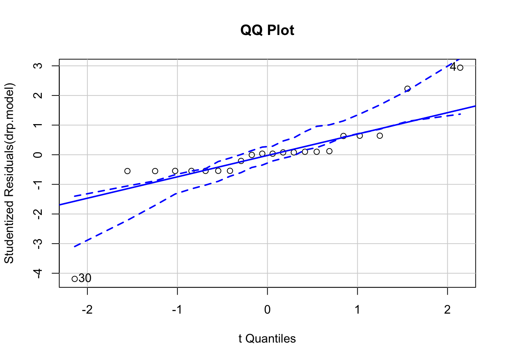
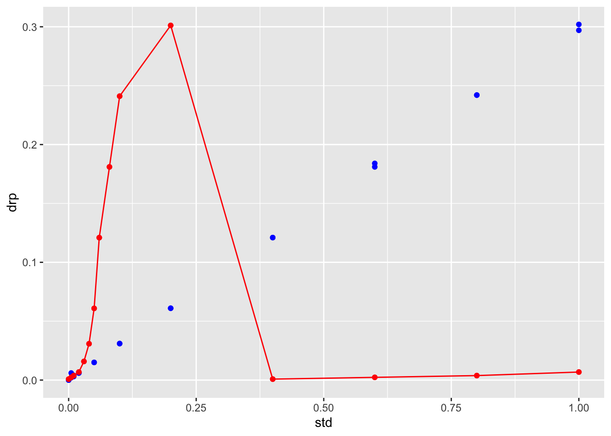

Regression
Bill Perry
2018/03/14
Regression
##An excellent description of the stats for AOV and regression is here:
https://www.zoology.ubc.ca/~schluter/R/fit-model/
##Load libraries We will read in the main files and load the libraries as we have worked with so far.
# One new package for summary stats
# install.packages("broom")
# install.packages("GGally")
# install.packages("car")
# install.packages("gvlma")
# install.packages("corrplot")
# install.packages("gvlma")
# load the libraries each time you restart R
library(tidyverse)
library(readxl)
library(lubridate)
library(scales)
library(skimr)
library(janitor)
library(patchwork)
# library(reshape2)
library(broom)
library(GGally)
library(corrplot)
library(car)
library(gvlma)Regressions
Read in files
stds.df <- read_csv("data/standards.csv")## Parsed with column specification:
## cols(
## replicate = col_double(),
## std = col_double(),
## drp = col_double(),
## tp = col_double(),
## nh4 = col_double()
## )glimpse(stds.df)## Observations: 30
## Variables: 5
## $ replicate <dbl> 1, 2, 1, 2, 1, 2, 1, 2, 1, 2, 1, 2, 1, 2, 1, 2, 1, 2, …
## $ std <dbl> 0.000, 0.000, 0.005, 0.005, 0.010, 0.010, 0.020, 0.020…
## $ drp <dbl> 0.000, 0.000, 0.002, 0.006, 0.004, 0.003, 0.006, 0.006…
## $ tp <dbl> -0.002, -0.002, -0.001, -0.001, 0.000, 0.000, 0.002, 0…
## $ nh4 <dbl> 0.008, 0.008, NA, NA, 0.018, 0.018, 0.020, 0.020, 0.02…Standards long format
sts_long.df <- stds.df %>%
gather(analyte, abs, -replicate, - std)Linear Regression GGPlot
stds.df %>%
ggplot(aes(x=std, y=drp)) +
geom_point(size=2) +
geom_smooth(method="lm")## Warning: Removed 8 rows containing non-finite values (stat_smooth).## Warning: Removed 8 rows containing missing values (geom_point).
Linear Regression
Linear regression models
# Fit our regression model
# regression formula and dataframte
drp.model <- lm(drp ~ std, data=stds.df)
# Summarize and print the results
summary(drp.model) # show regression coefficients table##
## Call:
## lm(formula = drp ~ std, data = stds.df)
##
## Residuals:
## Min 1Q Median 3Q Max
## -0.0041414 -0.0008169 0.0000548 0.0001750 0.0036839
##
## Coefficients:
## Estimate Std. Error t value Pr(>|t|)
## (Intercept) 0.0008144 0.0004281 1.902 0.0716 .
## std 0.3003270 0.0009545 314.640 <0.0000000000000002 ***
## ---
## Signif. codes: 0 '***' 0.001 '**' 0.01 '*' 0.05 '.' 0.1 ' ' 1
##
## Residual standard error: 0.001534 on 20 degrees of freedom
## (8 observations deleted due to missingness)
## Multiple R-squared: 0.9998, Adjusted R-squared: 0.9998
## F-statistic: 9.9e+04 on 1 and 20 DF, p-value: < 0.00000000000000022From this we would look at the values for slope = 0.3003270
intercept = 0.0008144
R^2 = 0.9998
###AOV table of regression
anova(drp.model)## Analysis of Variance Table
##
## Response: drp
## Df Sum Sq Mean Sq F value Pr(>F)
## std 1 0.232855 0.232855 98998 < 0.00000000000000022 ***
## Residuals 20 0.000047 0.000002
## ---
## Signif. codes: 0 '***' 0.001 '**' 0.01 '*' 0.05 '.' 0.1 ' ' 1Confidence intervals of estimates
# Confidence intervals for the sepal model
confint(drp.model)## 2.5 % 97.5 %
## (Intercept) -0.0000786454 0.001707489
## std 0.2983358854 0.302318032Linear Regresson Assumptions
Ordinary least squares regression relies on several assumptions
1. residuals are normally distributed and homoscedastic
2. errors are independent
3. relationships are linear
Investigate these assumptions visually by plotting your model:
Histogram of residuals
# histogram of residuals
hist(residuals(drp.model))
Diagnostic Plots
par(mar = c(4, 4, 2, 2), mfrow = c(1, 2))
plot(drp.model, which = c(1, 2)) # "which" argument optional
Plot of the Regression
plot(data=stds.df, drp ~ std, main="Regression Plot")
abline(drp.model, col="red")
Non‐constant Error Variance or Homoscedasticity
# Evaluate homoscedasticity
# non-constant error variance test
ncvTest(drp.model)## Non-constant Variance Score Test
## Variance formula: ~ fitted.values
## Chisquare = 5.294216, Df = 1, p = 0.021396Test for normality of residuals
to confirm the qqplot
#Test for normality of residuals
shapiro.test(drp.model$res)##
## Shapiro-Wilk normality test
##
## data: drp.model$res
## W = 0.84232, p-value = 0.00249Different code for a QQPlot for normality
qqPlot(drp.model, main="QQ Plot") #qq plot for studentized resid
## [1] 4 30Save residuals for further analyses
# # now to put the residuals next to the data and make sure that NAs are included
# Not sure why it has an error but it works.
# I am working on a nicer way to do this
stds.df$residuals[!is.na(stds.df$std)]<-residuals(lm(data=stds.df, drp ~ std, na.action=na.omit))## Warning: Unknown or uninitialised column: 'residuals'.## Warning in stds.df$residuals[!is.na(stds.df$std)] <- residuals(lm(data
## = stds.df, : number of items to replace is not a multiple of replacement
## lengthhead(stds.df)## # A tibble: 6 x 6
## replicate std drp tp nh4 residuals
## <dbl> <dbl> <dbl> <dbl> <dbl> <dbl>
## 1 1 0 0 -0.002 0.008 -0.000814
## 2 2 0 0 -0.002 0.008 -0.000814
## 3 1 0.005 0.002 -0.001 NA -0.000316
## 4 2 0.005 0.006 -0.001 NA 0.00368
## 5 1 0.01 0.004 0 0.018 0.000182
## 6 2 0.01 0.003 0 0.018 -0.000818Now to add in the predicted values
Store fitted values in dataframe
So this is not working and I need to look into this more but this is in theory the way to do it.
# now to see a plot of fitted and observed-----
stds.df$fitted[!is.na(stds.df$std)] <- fitted(lm(data=stds.df, drp ~ std, na.action=na.omit))## Warning: Unknown or uninitialised column: 'fitted'.## Warning in stds.df$fitted[!is.na(stds.df$std)] <- fitted(lm(data =
## stds.df, : number of items to replace is not a multiple of replacement
## lengthhead(stds.df)## # A tibble: 6 x 7
## replicate std drp tp nh4 residuals fitted
## <dbl> <dbl> <dbl> <dbl> <dbl> <dbl> <dbl>
## 1 1 0 0 -0.002 0.008 -0.000814 0.000814
## 2 2 0 0 -0.002 0.008 -0.000814 0.000814
## 3 1 0.005 0.002 -0.001 NA -0.000316 0.00232
## 4 2 0.005 0.006 -0.001 NA 0.00368 0.00232
## 5 1 0.01 0.004 0 0.018 0.000182 0.00382
## 6 2 0.01 0.003 0 0.018 -0.000818 0.00382GGPlot of data and fitted values
ggplot(stds.df) +
geom_point(aes(x = std, y = drp), color="blue")+
geom_point(aes(x = std, y = fitted), color="red")+
geom_line(aes(x = std, y = fitted), color="red")## Warning: Removed 8 rows containing missing values (geom_point).
##Other packages that do similiar things maybe better.
###The gvlma package can do a lot of this automatically {#gvlma}
#install.packages("gvlma")
# library(gvlma)
# Global test of model assumptions
gvmodel <- gvlma(drp.model)
summary(gvmodel)##
## Call:
## lm(formula = drp ~ std, data = stds.df)
##
## Residuals:
## Min 1Q Median 3Q Max
## -0.0041414 -0.0008169 0.0000548 0.0001750 0.0036839
##
## Coefficients:
## Estimate Std. Error t value Pr(>|t|)
## (Intercept) 0.0008144 0.0004281 1.902 0.0716 .
## std 0.3003270 0.0009545 314.640 <0.0000000000000002 ***
## ---
## Signif. codes: 0 '***' 0.001 '**' 0.01 '*' 0.05 '.' 0.1 ' ' 1
##
## Residual standard error: 0.001534 on 20 degrees of freedom
## (8 observations deleted due to missingness)
## Multiple R-squared: 0.9998, Adjusted R-squared: 0.9998
## F-statistic: 9.9e+04 on 1 and 20 DF, p-value: < 0.00000000000000022
##
##
## ASSESSMENT OF THE LINEAR MODEL ASSUMPTIONS
## USING THE GLOBAL TEST ON 4 DEGREES-OF-FREEDOM:
## Level of Significance = 0.05
##
## Call:
## gvlma(x = drp.model)
##
## Value p-value Decision
## Global Stat 11.05709 0.02593 Assumptions NOT satisfied!
## Skewness 0.01239 0.91138 Assumptions acceptable.
## Kurtosis 6.20162 0.01276 Assumptions NOT satisfied!
## Link Function 3.00386 0.08307 Assumptions acceptable.
## Heteroscedasticity 1.83923 0.17504 Assumptions acceptable.